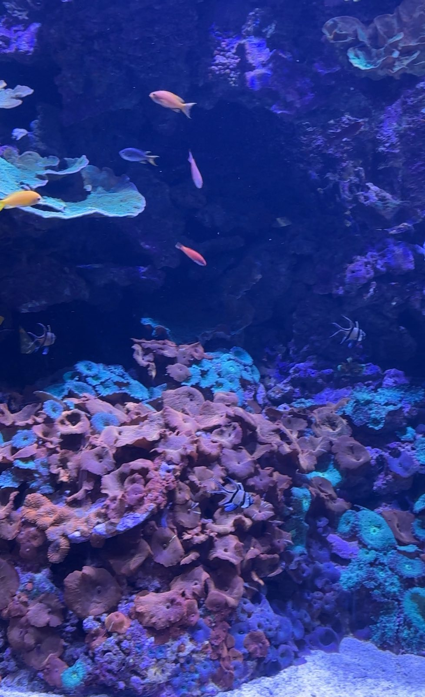
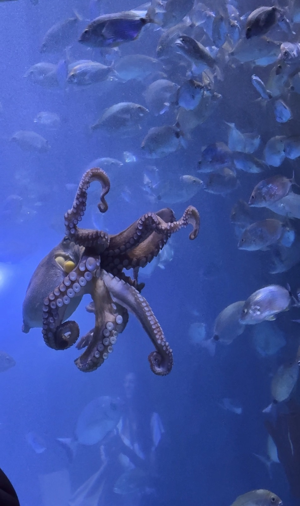
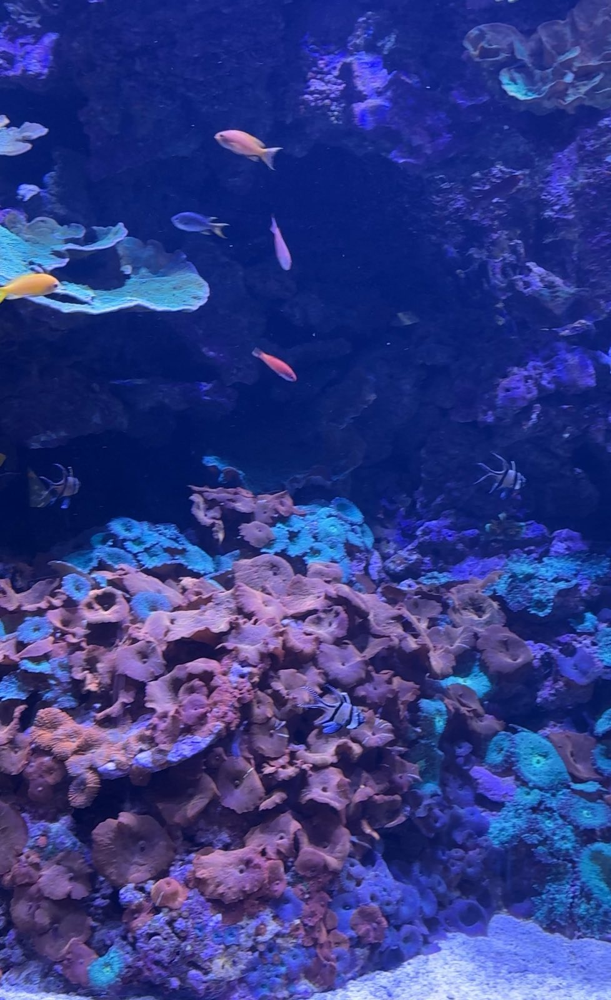
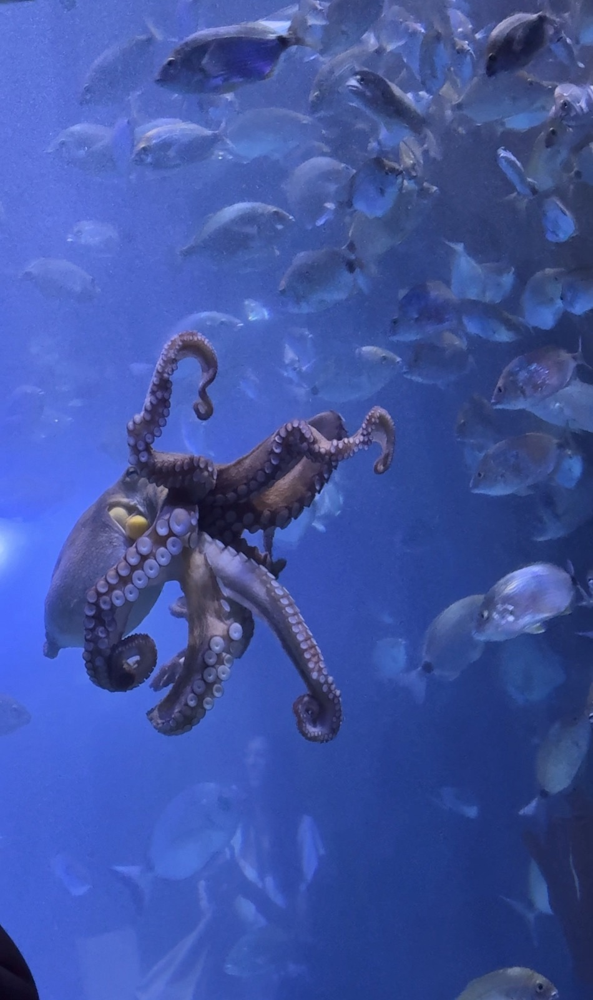
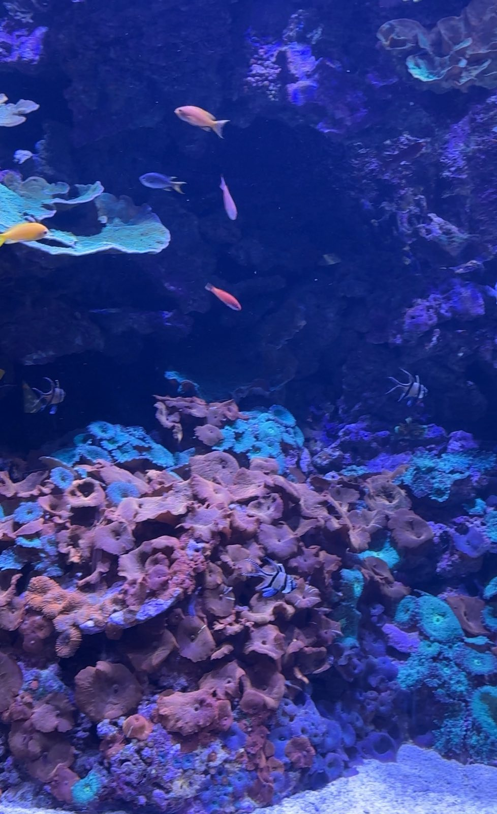
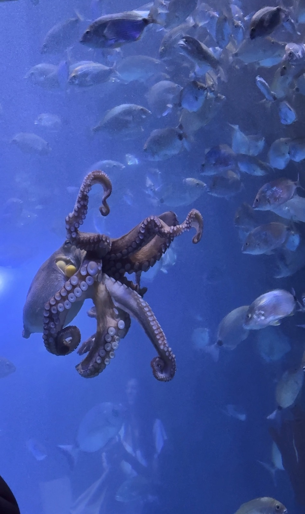

The theme of my gallery is the Oceanogràfic, an oceanarium in Valencia, Spain that I visited two years ago. It is home to 45,000 animals from 500 different species—including sharks, penguins, dolphins, sea lions, birds, reptiles and many more.


In 2024 I visited the Oceanogràfic in Valencia, Spain, which is one of the largest aquariums in Europe. It was an amazing experience seeing so many different marine animals up close, from sharks and dolphins to penguins, sea lions, and colorful fish. The aquarium is beautifully designed with different habitats representing the Mediterranean, Arctic, and tropical oceans, making it feel like a journey around the world under the sea. I especially loved the penguins and coral exhibits, which were both fascinating and calming. It was a truly memorable and educational trip.